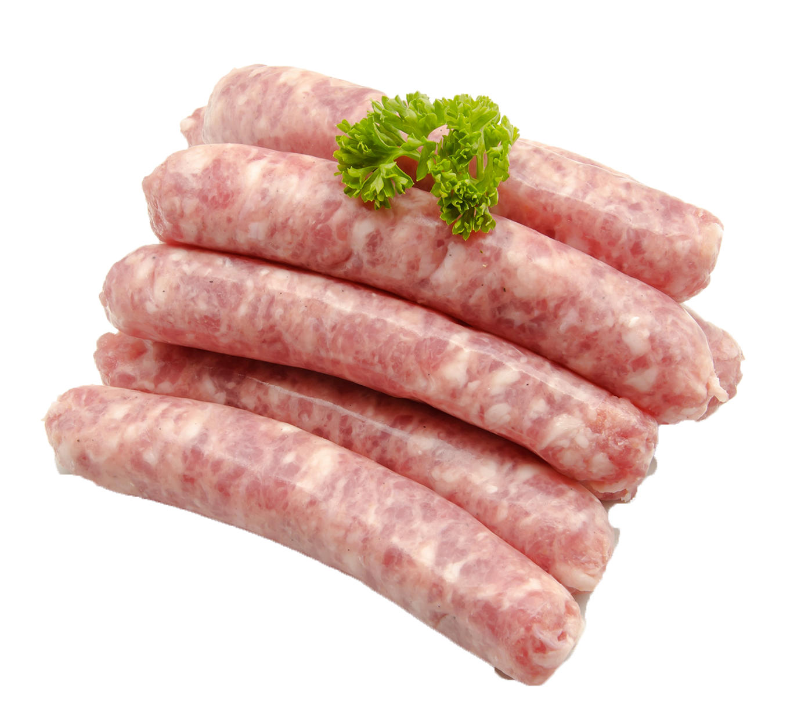

Chipolata

Info
Een chipolata is een (vers) worstje dat oorspronkelijk uit Frankrijk komt. Het lijkt op een Italiaans worstje en op de Duitse bratwurst. De chipolata wordt doorgaans niet gekookt, maar gegrild of gebraden. Chipolata's worden van varkensvlees gemaakt, dat gekruid is met peper en zout (en eventueel andere kruiden als kerrie, nootmuskaat of tijm).